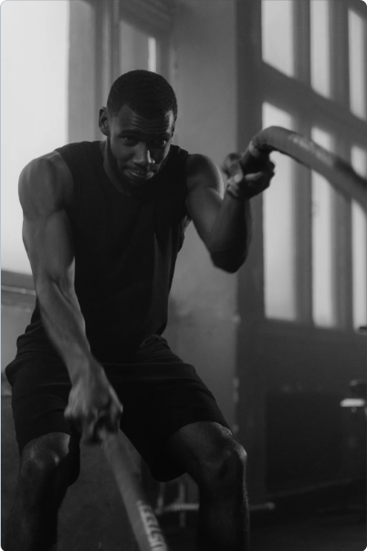
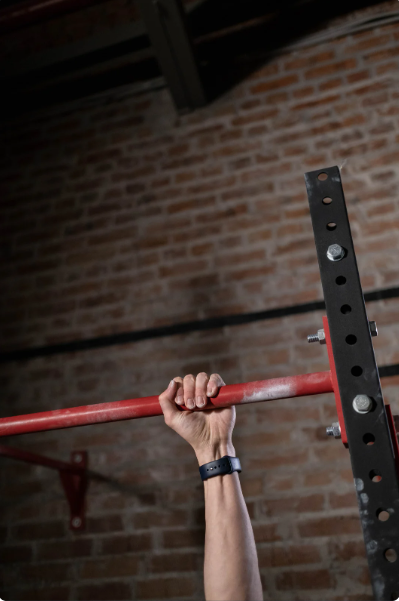

CrossFit Programs
Our CrossFit programs are designed to meet the needs of every fitness level. Whether you're a beginner or an experienced athlete, we have a program that will help you reach your goals. Each program is led by a certified CrossFit coach who will guide you through the workouts and provide individualized attention to help you improve your form and technique.
Beginner Program
Our beginner program is designed for those who are new to CrossFit or have limited experience with fitness. This program focuses on building a foundation of strength and mobility while introducing you to the fundamental movements of CrossFit. Workouts are scaled to your fitness level and progress is monitored by your coach.
Intermediate Program

Our intermediate program is designed for those who have completed the beginner program or have a moderate level of fitness. This program focuses on increasing your strength and endurance while improving your technique on more advanced CrossFit movements. Workouts are more challenging and designed to push you to your limits.
Advanced Program
Our advanced program is designed for experienced CrossFit athletes who are looking for a greater challenge. This program focuses on high-intensity workouts and complex movements that require advanced strength and skill. Workouts are designed to test your limits and push you to become a better athlete.